Capítulo 3 Análisis bivariado
3.1 Dos variables cualitativas
Antes de iniciar, nos aseguramos de haber instalado las librerías necesarias.
library(haven)
library(vcd)
library(DT)
library(DescTools)En caso de no tenerlas, instalamos las librerías copiando y pegando el siguiente codigo en la consola.
install.packages("tidyverse")
install.packages("vcd")
install.packages("DescTools")
install.packages("DT")Luego podemos comenzar con el análisis de datos. Para ello, crear un nuevo script con el nombre de analisisBiva. Copiar y ejecutar cada uno de los códigos en R detallados más adelante.
3.1.1 Lectura de datos.
Leemos los datos desde SPSS con la librería haven y utilizando el enlace hacia los datos:
library(haven)
enlace <- "http://portal.susalud.gob.pe/wp-content/uploads/archivo/base-de-datos/2015/CUESTIONARIO%2002%20-%20CAPITULOS.sav"
datossalud = read_sav(enlace)3.1.2 Exploración básica.
Exploramos variables que interesan en el análisis.
Variable C2P1: profesión
head(datossalud$C2P1)## <labelled<double>[6]>: ¿CUÁL ES SU PROFESIÓN?
## [1] 2 2 2 2 2 1
##
## Labels:
## value label
## 1 Médico
## 2 Enfermero/aVariable C2P4: sexo.
head(datossalud$C2P4)## <labelled<double>[6]>: SEXO
## [1] 2 2 2 2 2 1
##
## Labels:
## value label
## 1 Hombre
## 2 MujerVariable C2P7: Tipo de contrato.
head(datossalud$C2P7)## <labelled<double>[6]>: ¿QUÉ TIPO DE CONTRATO TIENE CON ESTE ESTABLECIMIENTO DE SALUD?
## [1] 5 5 2 2 5 5
##
## Labels:
## value label
## 1 Locaciòn de servicios (Honorarios profesionales)
## 2 Contrato Administrativo de Servicios (CAS)
## 3 Contrato a plazo fijo (sujeto a modalidad)
## 4 Nombrado, permanente
## 5 Plazo indeterminado o indefinido (D.S.728)
## 6 OtroObservamos el dataset solo con las variables de interés:
Seleccionamos los datos de los médicos con el siguiente código:
datostemp <- datossalud[,c("C2P1","C2P4","C2P7")]
names(datostemp) = c("profesion","sexo","contrato")
datos <- datostemp[datostemp$profesion==1,]Y finalmente observamos los datos:
head(datos)## # A tibble: 6 x 3
## profesion sexo contrato
## <dbl+lbl> <dbl+lbl> <dbl+lbl>
## 1 1 [Médico] 1 [Hombre] 5 [Plazo indeterminado o indefinido (D.S.728)]
## 2 1 [Médico] 1 [Hombre] 5 [Plazo indeterminado o indefinido (D.S.728)]
## 3 1 [Médico] 2 [Mujer] 2 [Contrato Administrativo de Servicios (CAS)]
## 4 1 [Médico] 1 [Hombre] 5 [Plazo indeterminado o indefinido (D.S.728)]
## 5 1 [Médico] 1 [Hombre] 3 [Contrato a plazo fijo (sujeto a modalidad)]
## 6 1 [Médico] 1 [Hombre] 5 [Plazo indeterminado o indefinido (D.S.728)]3.1.3 Análisis univariado.
Ahora, realizamos el análisis de cada variable: C2P4(Sexo) y C2P7(Contrato). Observamos la tabla de frecuencias, proporciones, y gráfico de barras para cada variable:
3.1.3.1 Variable: Sexo
#contrato
head(datos$sexo)## <labelled<double>[6]>: SEXO
## [1] 1 1 2 1 1 1
##
## Labels:
## value label
## 1 Hombre
## 2 Mujer# tabla de frecuencias
tabla_sexo = table(datos$sexo)
tabla_sexo##
## 1 2
## 1657 562# tabla de frecuencias con proporciones
prop.table(tabla_sexo)*100##
## 1 2
## 74.67328 25.32672De esta tabla, se observa que hay 74.7% de médicos y solo 25.3% de médicas. Podemos añadir, finalmente, un gráfico, para observar estas diferencias rápidamente.
barplot(tabla_sexo,
main="Sexo")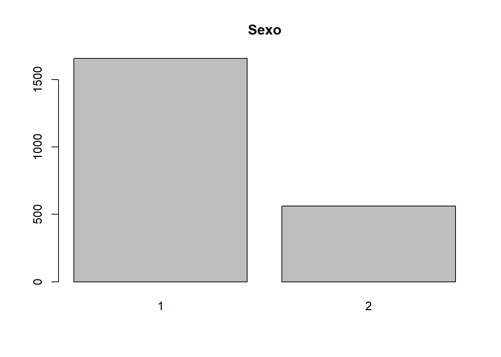
3.1.3.2 Variable: Contratos
# muestra de datos
head(datos$contrato)## <labelled<double>[6]>: ¿QUÉ TIPO DE CONTRATO TIENE CON ESTE ESTABLECIMIENTO DE SALUD?
## [1] 5 5 2 5 3 5
##
## Labels:
## value label
## 1 Locaciòn de servicios (Honorarios profesionales)
## 2 Contrato Administrativo de Servicios (CAS)
## 3 Contrato a plazo fijo (sujeto a modalidad)
## 4 Nombrado, permanente
## 5 Plazo indeterminado o indefinido (D.S.728)
## 6 Otro# Tabla de frecuencias
tabla_contrato = table(datos$contrato)
tabla_contrato##
## 1 2 3 4 5 6
## 158 279 138 881 707 56# tabla de frecuencias con proporciones.
prop.table(tabla_contrato)*100##
## 1 2 3 4 5 6
## 7.120324 12.573231 6.219018 39.702569 31.861199 2.523659# gráfico de barras
barplot(tabla_contrato,
main="Contrato")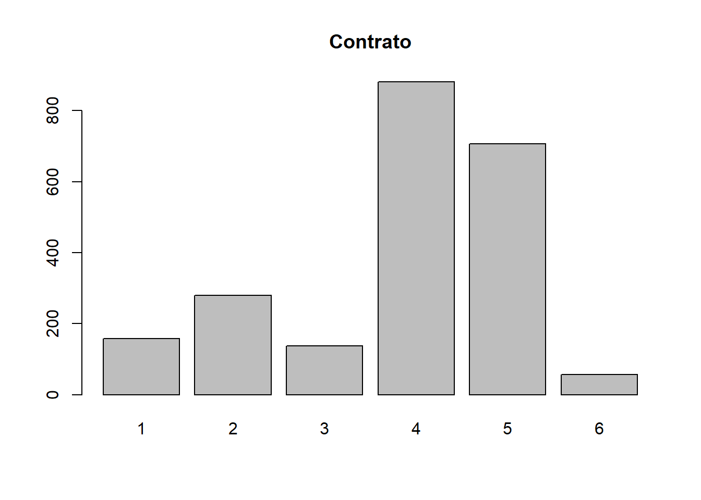
3.1.3.3 Opción: 2 gráficos en 1
forma_grafico <- par(mfrow=c(1,2))
barplot(100*prop.table(tabla_sexo),
ylim=c(0,100),
names.arg = c("Hombre","Mujer"),
ylab="Porcentaje")
barplot(100*prop.table(tabla_contrato),
ylim=c(0,100),col=1:6,
ylab="Porcentaje",xaxt="n")
legend(1,100,legend=c("Recibos","CAS","Plazo fijo","Nombrado","Plazo Indeterminado","Otros"),
col=1:6,bty="n",pch=15)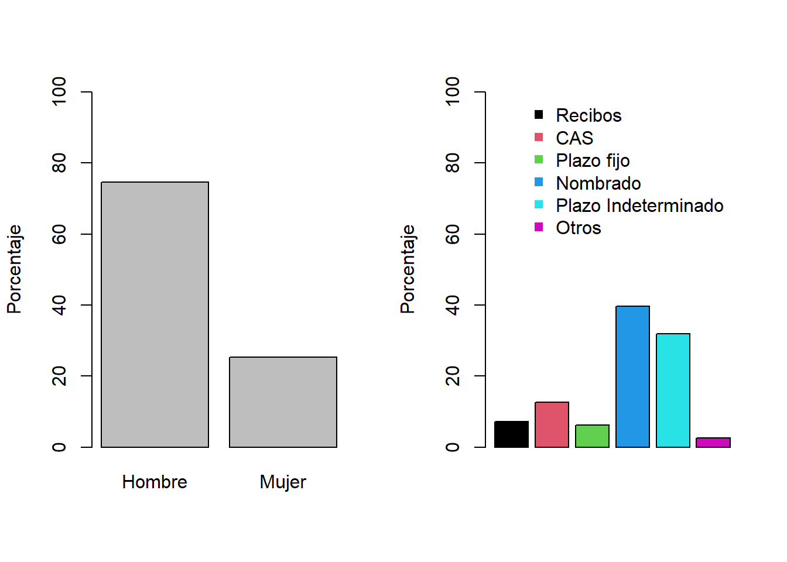
¿Qué observo en estos resultados? (Obtener conclusiones a partir de las tablas de proporciones)
3.1.4 Análisis bivariado
3.1.4.1 Exploración
Ahora, realizaremos un análisis bivariado utilizando tablas de contingencia:
tabla_conti <- table(datos$sexo,datos$contrato)
tabla_conti##
## 1 2 3 4 5 6
## 1 128 172 85 684 547 41
## 2 30 107 53 197 160 15Interpretación:
- 128 médicos y 30 médicas tienen contrato por locación de servicio.
- 172 médicos y 107 médicas tienen contrato CAS.
Ejercicio: Interpretar para las demás categorías de contrato.
Ahora, utilizaremos la función prop.table para obtener la tabla en proporciones; y adicionamos el parámetro margin a la función.
margin=1significa que los porcentajes estan calculados sobre la base de los totales por filas. (Los porcentajes por cada fila suman 100%)margin=2significa que los porcentajes estan calculados sobre la base de los totales por columnas. (Los porcentajes por cada columna suman 100%)
tabla1 <- prop.table(tabla_conti, margin=1) #
round(tabla1,2)##
## 1 2 3 4 5 6
## 1 0.08 0.10 0.05 0.41 0.33 0.02
## 2 0.05 0.19 0.09 0.35 0.28 0.03Interpretación:
- Observamos que 41% de los médicos tienen contrato “Nombrado o permanente” mientras que solo el 35% de las médicas tienen contrato “Nombrado o permanente.”
- Asimismo, se observa que el 10% de los médicos tienen contrato “CAS” y un mayor porcentaje, 19%, de médicas tienen contrato “CAS.”
Ejercicio: Interpretar resultados para el porcentaje de contratos de plazo indeterminado entre hombres y mujeres.
tabla2 <- prop.table(tabla_conti, margin=2) #
round(tabla2,2)##
## 1 2 3 4 5 6
## 1 0.81 0.62 0.62 0.78 0.77 0.73
## 2 0.19 0.38 0.38 0.22 0.23 0.27Para la interpretación comparamos la distribución condicional a cada tipo de contrato con la distribución marginal del sexo.
Interpretación:
En general, se observo que los médicos representan el 74.7% del total y las médicas solo el 25.3%. En algunos tipos de contratos, se observan diferencias con respecto a esta distribución, especialmente en CAS (2), Contrato a plazo fijo (3), y Locación de servicios(1)
- Para de los contratos de tipo CAS (Código 2), 62% son asignadas a los médicos y 38% a las médicas. Es decir, una menor proporción, comparada con el total, es asignada a los médicos.
- Para los contratos de locación de servicio (código 1), 81% son para los médicos y solo 19% para las médicas. Una mayor proporción, comparada con el total, es asignada a los médicos.
Otra forma de analizar y mostrar la relación entre las variables es con gráficos:
- Gráficos de barras.
barplot(prop.table(tabla_conti,1),
beside = T,
ylim = c(0,1),
col=c("darkblue","skyblue"),
ylab = "Proporcion")
legend( 9, 0.9,
legend=c("Hombre","Mujer"),
col=c("darkblue","skyblue"),
bty="n",
pch=15)
legend(2,1,
legend=c("1: Recibos",
"2: CAS",
"3: Plazo fijo",
"4: Nombrado",
"5: Plazo Indeterminado",
"6: Otros"),
bty="n")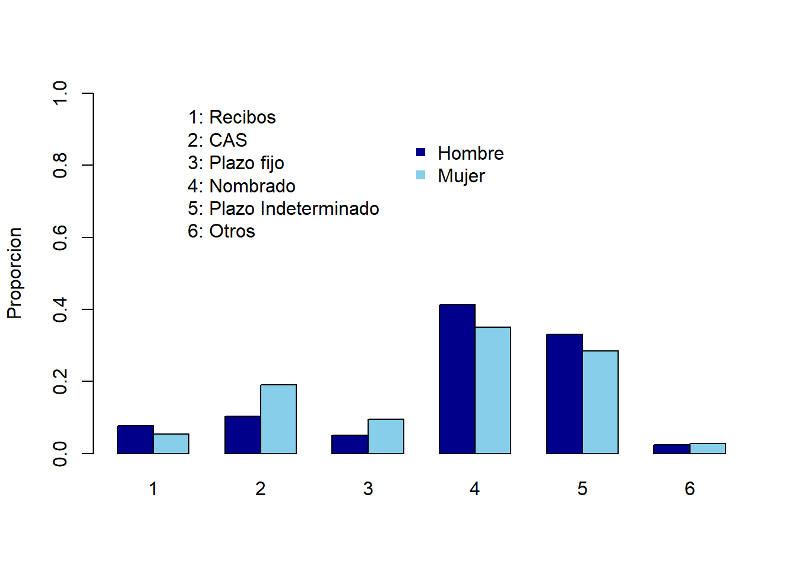
O este otro gráfico de barras acumulado:
library(vcd)
mosaicplot(table(datos$contrato,datos$sexo),
main="",
color = c("darkblue","skyblue"),
xlab = "Contratos", # label for x-axis
ylab = "Sexo" # label for y-axis
)
#abline(h=mean(datos$sexo==2))
abline(h=0.253, col=2)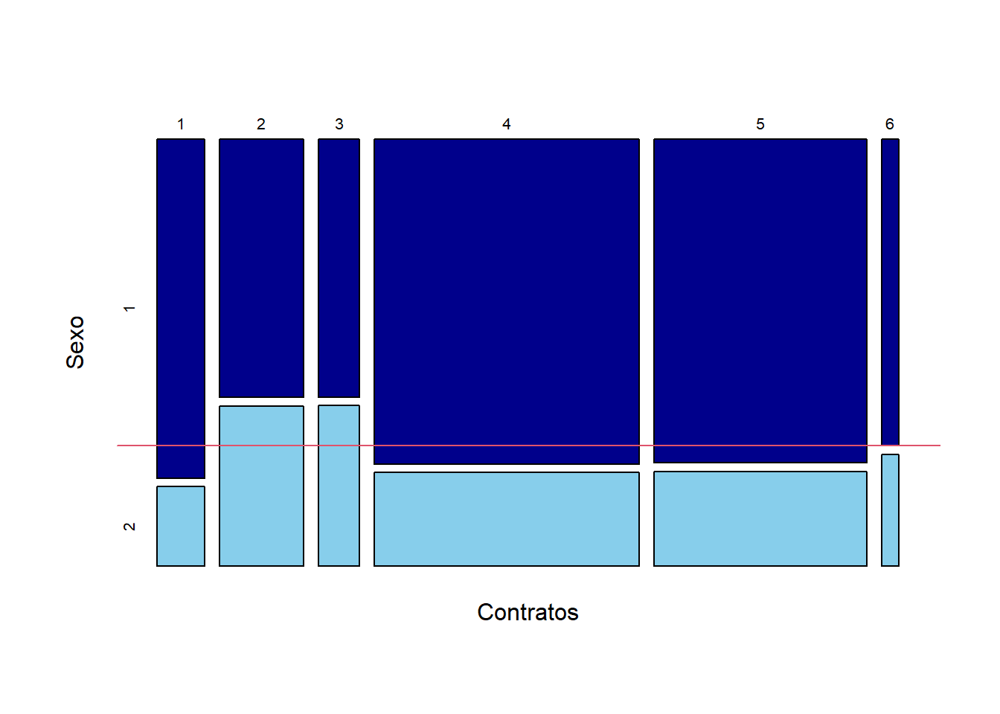
¿Qué conclusiones obtiene a partir de este análisis? ¿Hay relación entre el sexo y el tipo de contrato?
3.1.4.2 Pruebas de hipótesis.
Evaluamos si existe o no asociación entre el sexo y los tipos de contrato de manera objetiva utilizando una prueba de hipótesis.
- Definimos las hipótesis:
- \(H_O\): Hay independencia entre el sexo y el tipo de contrato.
- \(H_1\): No hay independencia entre el sexo y el tipo de contrato. (Existe asociación entre la variable sexo y el tipo de contrato)
Definimos la significancia: \(5\)%
Elegimos la prueba de hipótesis: Chi-cuadrado para la independencia.
Calculamos el estadístico de prueba y p-valor en R:
chisq.test(datos$sexo, datos$contrato)##
## Pearson's Chi-squared test
##
## data: datos$sexo and datos$contrato
## X-squared = 47.742, df = 5, p-value = 4.009e-09¿A qué conclusión llegamos con esta prueba?
- Decisión: Rechazar Ho
- Conclusión: Con una significancia del 5%, se puede afimar que existe asociación entre la variable sexo y el tipo de contrato
3.1.4.3 Medidas de asociación.
Ahora, continuamos analizando la relación entre las variables sexo y tipos de contrato. Esta vez analizamos el grado de asociación entre las variables utilizando para ello dos medidas de asociación muy conocidas.
Para los calculos en R, necesitaremos la librería DescTools.
library(DescTools)
ContCoef(datos$sexo, datos$contrato)## [1] 0.1451281CramerV(datos$sexo, datos$contrato)## [1] 0.146681¿Qué grado de relación existe entre estas dos variables?
Recordar lo siguiente :
- Más de 0.5 Alta asociación.
- 0.3 a 0.5 Asociación moderada.
- 0.1 a 0.3 Baja asociación.
- 0 a 0.1 Muy baja (si existiese).
3.1.5 Ejercicio
Crear un nuevo script, copiar el código y realizar las modificaciones correspondientes para realizar un análisis de la asociación entre el sexo y el tipo de contrato esta vez para los enfermeros.
Crear un reporte con sus resultados, interpretaciones y conclusiones.
- ¿Existe evidencia entre una relación entre el sexo y el tipo de contrato en el grupo de enfermeros?
- (Opcional) Si es así, ¿Cuál es el grado de asociación entre el sexo y tipo de contrato?
- (Opcional) ¿Hay una alta asociación entre estas variables?
3.2 Una variable cualitativa y otra cuantitativa
Antes de iniciar, nos aseguramos de haber instalado las librerías necesarias.
library(haven)
library(summarytools)En caso de no tenerlas, instalamos las librerías copiando y pegando el siguiente codigo en la consola.
install.packages("tidyverse")
install.packages("summarytools")Luego podemos comenzar con el análisis de datos. Para ello, crear un nuevo script y guardarlo con el nombre de analisisBivar. A continuación, copiar y ejecutar cada uno de los códigos detallados más adelante.
3.2.1 Lectura de datos.
Leemos los datos desde SPSS con la librería haven y utilizando el enlace hacia los datos:
library(haven)
enlace<-"http://portal.susalud.gob.pe/wp-content/uploads/archivo/base-de-datos/2015/CUESTIONARIO%2002%20-%20CAPITULOS.sav"
datossalud = read_sav(enlace)3.2.2 Exploración básica.
Exploramos variables que interesan en el análisis. La función attr muestra detalles de las variables.
Observaremos la variable C2P1: profesión
head(datossalud$C2P1)## <labelled<double>[6]>: ¿CUÁL ES SU PROFESIÓN?
## [1] 2 2 2 2 2 1
##
## Labels:
## value label
## 1 Médico
## 2 Enfermero/aVariable C2P4: sexo.
head(datossalud$C2P4)## <labelled<double>[6]>: SEXO
## [1] 2 2 2 2 2 1
##
## Labels:
## value label
## 1 Hombre
## 2 MujerVariable C2P2EDAD: Tipo de contrato.
head(datossalud$C2P2EDAD)## [1] 40 42 27 31 38 67Seleccionamos el dataset solo con las variables de interés:
Seleccionamos los datos de los médicos y además solo las variables de interés con el siguiente código:
datostemp <- datossalud[,c("C2P1","C2P4","C2P2EDAD")]
names(datostemp) = c("profesion","sexo","edad")
datos <- datostemp[datostemp$profesion==1,]Y finalmente observamos los datos:
head(datos)## # A tibble: 6 x 3
## profesion sexo edad
## <dbl+lbl> <dbl+lbl> <dbl>
## 1 1 [Médico] 1 [Hombre] 67
## 2 1 [Médico] 1 [Hombre] 54
## 3 1 [Médico] 2 [Mujer] 35
## 4 1 [Médico] 1 [Hombre] 43
## 5 1 [Médico] 1 [Hombre] 38
## 6 1 [Médico] 1 [Hombre] 463.2.3 Análisis univariado.
Realizamos el análisis individual de las variables de interés: Sexo y Edad.
3.2.3.1 Variable: Sexo
Para la variable sexo realizamos una tabla de frecuencias y observamos los resultados.
tabla_sexo = table(datos$sexo)
tabla_sexo##
## 1 2
## 1657 562prop.table(tabla_sexo)##
## 1 2
## 0.7467328 0.2532672summarytools::freq(as.factor(datos$sexo))## Frequencies
##
## Freq % Valid % Valid Cum. % Total % Total Cum.
## ----------- ------ --------- -------------- --------- --------------
## 1 1657 74.67 74.67 74.67 74.67
## 2 562 25.33 100.00 25.33 100.00
## <NA> 0 0.00 100.00
## Total 2219 100.00 100.00 100.00 100.00Interpretación:
- Observamos 25.3% de mujeres y 74.7% de hombres entre los médicos.
3.2.3.2 Variable: Edad
La variable cuantitativa edad la analizamos utilizando medidas de posición central, dispersión y además un gráfico (histograma o gráficos de cajas).
- Medidas de resumen básicas:
summary(datos$edad)## Min. 1st Qu. Median Mean 3rd Qu. Max.
## 24.00 37.00 46.00 46.45 56.00 88.00sd(datos$edad)## [1] 11.38578- Coeficiente de variación:
# Coeficiente de variación.
cv = sd(datos$edad)/mean(datos$edad)- Asimetría de fisher para la edad:
Fisher.asi = function(x) mean((x - mean(x,na.rm=T))^3,na.rm=T)/sd(x,na.rm=T)^3
Fisher.asi(datos$edad)## [1] 0.143489Esta vez, utilizaremos un histograma para observar la distribución de la edad de los médicos.
library(summarytools)
histo<- hist(datos$edad,
main="Histograma de las edades",
color='yellow')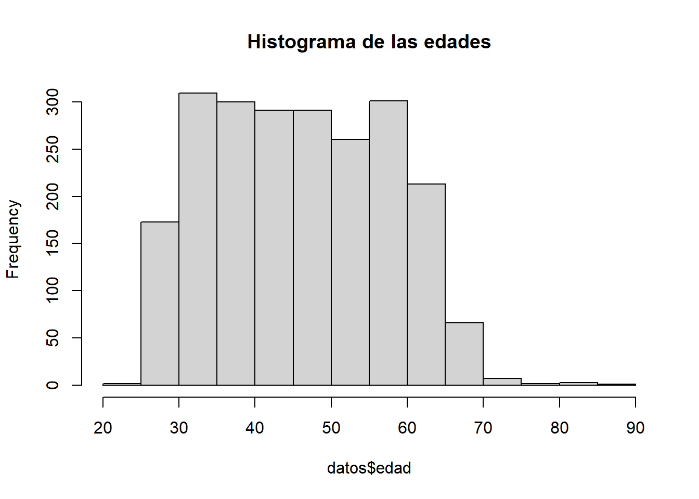
cortes <- histo$breaks # Cortes para la variable a partir del histograma
var_cat <- cut(datos$edad,cortes) # categorizada
freq(var_cat) # Tabla de frecuencias## Frequencies
## var_cat
## Type: Factor
##
## Freq % Valid % Valid Cum. % Total % Total Cum.
## ------------- ------ --------- -------------- --------- --------------
## (20,25] 2 0.090 0.090 0.090 0.090
## (25,30] 173 7.796 7.886 7.796 7.886
## (30,35] 309 13.925 21.812 13.925 21.812
## (35,40] 300 13.520 35.331 13.520 35.331
## (40,45] 291 13.114 48.445 13.114 48.445
## (45,50] 291 13.114 61.559 13.114 61.559
## (50,55] 260 11.717 73.276 11.717 73.276
## (55,60] 301 13.565 86.841 13.565 86.841
## (60,65] 213 9.599 96.440 9.599 96.440
## (65,70] 66 2.974 99.414 2.974 99.414
## (70,75] 7 0.315 99.730 0.315 99.730
## (75,80] 2 0.090 99.820 0.090 99.820
## (80,85] 3 0.135 99.955 0.135 99.955
## (85,90] 1 0.045 100.000 0.045 100.000
## <NA> 0 0.000 100.000
## Total 2219 100.000 100.000 100.000 100.0003.2.4 Análisis bivariado.
3.2.4.1 Exploración
Comenzamos observando las diferencias entre los dos grupos: hombres y mujeres. Los gráficos más utilizados son gráficos de cajas (boxplots) o histogramas para observar estas diferencias.
- Comenzamos comparando las ditribuciones con histogramas:
config_grafico <- par(mfrow=c(1,2))
hist(datos$edad[datos$sexo==1],
prob=T,xlab="Edad (años)",ylab="Densidad",
main="Hombres",xlim=c(20,90),ylim=c(0,0.04))
hist(datos$edad[datos$sexo==2],
prob=T,xlab="Edad (años)",ylab="Densidad",
main="Mujeres",xlim=c(20,90))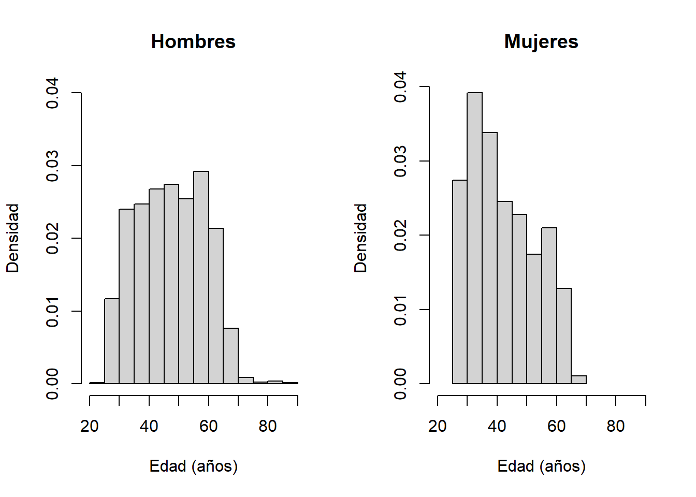
- Una mejor visualización de estas diferencias puede realizarse con un gráfico de cajas o boxplot:
boxplot(edad~sexo,
datos,
xlab="Sexo",
ylab="Edad (anos)",
xaxt="n")
axis(1, at=1:2,
labels=c("Hombre","Mujer"))
¿Qué observo en estos resultados? ¿Es sencillo comparar la tendencia central, dispersión y asimetría a partir de este gráfico? ¿Podemos responder las siguientes preguntas?
- ¿Quién tiene mayor edad en general?
- ¿Quién tiene mayor dispersión en sus datos?
Para una comparación cuantitativa adicional a los gráficos, veremos los resultados de las medidas de resumen por cada grupo:
by(datos$edad,datos$sexo,summary)## datos$sexo: 1
## Min. 1st Qu. Median Mean 3rd Qu. Max.
## 24.00 38.00 48.00 47.77 57.00 88.00
## --------------------------------------------------------------------------------
## datos$sexo: 2
## Min. 1st Qu. Median Mean 3rd Qu. Max.
## 25.00 34.00 40.00 42.56 51.00 68.00by(datos$edad,datos$sexo,IQR)## datos$sexo: 1
## [1] 19
## --------------------------------------------------------------------------------
## datos$sexo: 2
## [1] 17by(datos$edad,datos$sexo,Fisher.asi) ## datos$sexo: 1
## [1] 0.05708801
## --------------------------------------------------------------------------------
## datos$sexo: 2
## [1] 0.4042966Interpretación:
Las médicas son, en general, más jóvenes que los médicos La mediana de las edades para las mujeres (\(Me_{M}=\) 40) es menor a la de los médicos (\(Me_{H}=\) 48).
Se observa una ligera diferencia en la dispersión de las edades de los hombres(\(RIC_{M}=\) 19) y médicas (\(RIC_{M}=\) 17).
Hay mayor asimetría con cola a la derecha para las edades de las médicas ((\(CA_{F_M}=\) 0.06) que para los médicos(\(CA_{F_H}=\) 0.4).
Conclusión: se evidencia asociación entre el sexo y la edad de los médicos.
Otros gráficos que se pueden observar para realizar esta comparación son los siguientes:
- Comparación con gráficos de densidad.
plot(density(datos$edad[datos$sexo==1]),
xlab="Edad",ylab="Densidad",main="",ylim=c(0,0.05))
lines(density(datos$edad[datos$sexo==2]),col=2)
legend(60,0.05,legend=c("Hombres","Mujeres"),
col=1:2,lty=1,bty="n")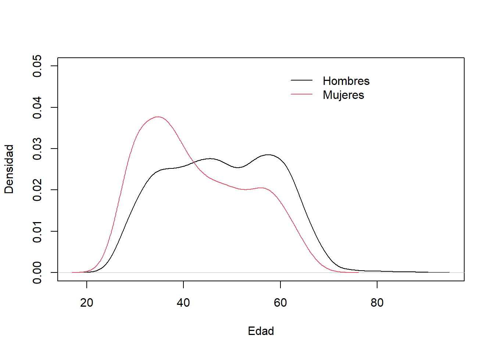
- Comparación de las funciones de distribución de los grupos.
plot(ecdf(datos$edad[datos$sexo==1]),
main="")
lines(ecdf(datos$edad[datos$sexo==2]),
col=2)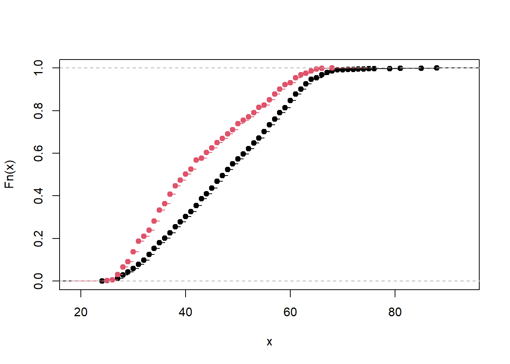
3.2.5 Ejercicio
Crear un nuevo script y modificar los códigos para realizar un análisis de la asociación entre el sexo y las edades de los enfermeros(as). Escoger un gráfico para la comparación de los grupos e interpretar las médidas de resumen comparando por sexo.
Crear un reporte con sus resultados y conclusiones. Sus conclusiones deben responder a las siguientes preguntas:
- ¿Son diferentes las edades entre los enfermeros y enferemeras? (Observar y comparar boxplots, histogramas o densidades)
- ¿Qué grupo tiene mayor edad? (Comparar medidas de posición central)
- ¿Qué grupo tiene mayor dispersión de edades? (Comparar medidas de dispersión)
- ¿Quién tiene mayor asimetría y hacia que lado? (Comparar coeficiente de asimetría de Fisher)
- ¿Existe evidencia entre una relación entre el sexo y la edad en el grupo de enfermeros? (Opcional: Realizar prueba de hipótesis y concluir)
3.3 Variables cuantitativas.
- Librerías
Revisamos si tenemos todas la librerías necesarias con estos comandos en la consola:
library(performance)
library(skimr)
library(dplyr)En caso de no tenerlos instalados, utilizamos estas líneas de código en la consola:
install.packages("performance", dependencies=TRUE)
install.packages("see", dependencies=TRUE)
install.packages("skimr", dependencies=TRUE)
install.packages("dplyr", dependencies=TRUE)3.3.1 Caso 1: BMI
En este caso, utilizaremos los datos acerca de indice de masa corporal índice de masa corporal (IMC)1.
\(IMC = {Peso(kg)}/{Talla(m)^2}\)
Este indicador se usa para medir obesidad en las personas. Carrillo et.al (2018) analizaron datos de un grupo familias en el norte el Perú para analizar si hay relación entre el IMC de los padres y el IMC de los hijos.
El dataset que utilizaremos es un subconjunto de los datos del estudio.
3.3.1.1 Lectura de datos
databmi = read.csv("https://egutierreza.netlify.app/uploads/databmi.csv")
names(databmi)## [1] "bmi" "bmi.papa" "bmi.mama" "edad.papa" "edad.mama" "edad"Observemos que los datos que tenemos son el IMC (BMI en inglés) y edad de una persona y sus padres.
Comenzamos realizando una exploración de cada variable con el siguiente comando.
library(skimr)
skim(databmi)Ejercicio:
- ¿Qué conclusiones obtiene a partir de el análisis univariado a cada variable del dataset? Interpretar las medidas de tendencia central y desviación para cada variable.
3.3.1.2 Exploración bivariada
Para realizar una exploración entre variables cuantitativas, veremos los gráficos de dispersión y las correlaciones entre todos los pares de variables:
# Gráficos de disepersión
pairs(databmi)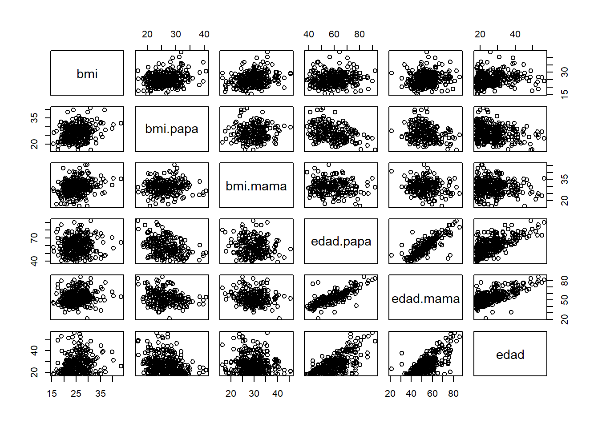
# Matrix de correlaciones
cor(databmi)## bmi bmi.papa bmi.mama edad.papa edad.mama edad
## bmi 1.00000000 0.22829796 0.25430493 0.08375241 0.1533664 0.20557922
## bmi.papa 0.22829796 1.00000000 0.08127217 -0.35633830 -0.2374230 -0.23220622
## bmi.mama 0.25430493 0.08127217 1.00000000 -0.12954055 -0.1579986 -0.08774887
## edad.papa 0.08375241 -0.35633830 -0.12954055 1.00000000 0.7910062 0.68414693
## edad.mama 0.15336643 -0.23742304 -0.15799864 0.79100622 1.0000000 0.68763701
## edad 0.20557922 -0.23220622 -0.08774887 0.68414693 0.6876370 1.00000000Interpretación:
- Se observa correlación moderada alta entre las variables de edades de los padres e hijo.
- Las variables de bmi del padre y madre tienen correlación baja con el bmi del hijo, 0.23 y 0.25 respectivamente.
En específico, observamos la relación entre el IMC de una persona y su padre:
plot(databmi$bmi.papa,databmi$bmi,
xlab="Indice de masa corporal (padre)",
ylab="Indice de masa corporal (hijo)",
main="Diagrama de dispersión")
abline(c(18,0.1),lty=2, col="blue")
abline(c(22,0.3),lty=3, col="green")
abline(c(20,0.12),lty=4, col="orange")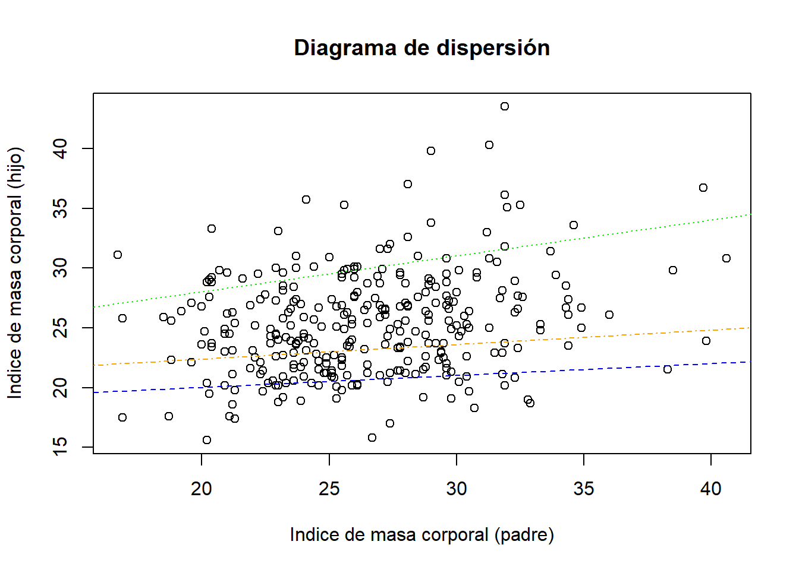
Observemos que se han graficado 3 posibles líneas que pasan entre los puntos del gráfico de dispersión.
Estas líneas representan los posibles modelos que podemos usar para este conjunto de datos.
¿Cuál de estos modelos es el mejor? El modelo con el que se obtenga la menor suma de cuadrados de los errores.
3.3.2 Caso 2: Arboles
3.3.2.1 Cargar datos
En esta data, tenemos los siguiente datos de arboles:
- Diámetro: pulgadas
- Altura en pies.
- Volumen en pies cúbicos.
library(dplyr)
data_arboles <- trees
names(data_arboles) <- c("diametro","altura","volumen")
head(data_arboles)## diametro altura volumen
## 1 8.3 70 10.3
## 2 8.6 65 10.3
## 3 8.8 63 10.2
## 4 10.5 72 16.4
## 5 10.7 81 18.8
## 6 10.8 83 19.7Realizamos un análisis exploratorio univariado para cada variable.
library(skimr)
skim(data_arboles)3.3.2.2 Exploración bivariada
Ahora, exploramos las relaciones entre pares de variables.
# Matriz de correlaciones:
cor(data_arboles)## diametro altura volumen
## diametro 1.0000000 0.5192801 0.9671194
## altura 0.5192801 1.0000000 0.5982497
## volumen 0.9671194 0.5982497 1.0000000# Gráfico de dispersión para pares de variables.
pairs(data_arboles)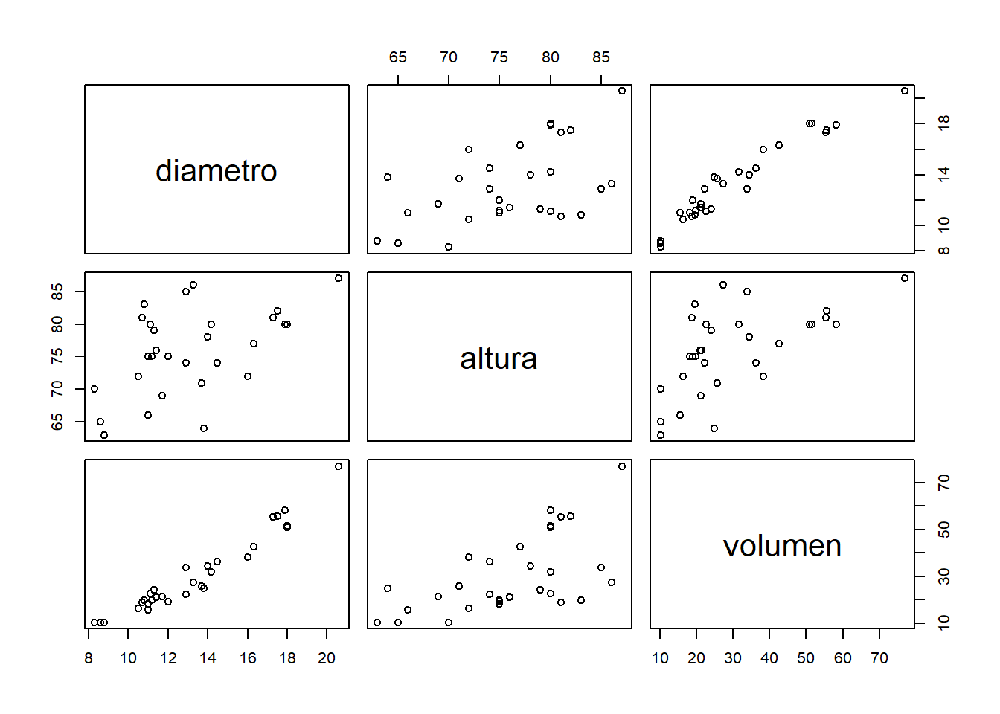
¿Qué tipo de relaciones observamos entre las variables? ¿Entre qué variables encontramos alta correlación?
- Observamos relaciones lineales positivas entre las variables.
Otra forma de ver un gráfico de dispersión:
library(ggplot2)
ggplot(data = data_arboles, mapping = aes(x = diametro, y = volumen)) +
geom_point(color = "firebrick", size = 2) +
labs(title = "Diagrama de dispersión", x = "Diámetro", y = "Volumen") +
theme_bw() +
theme(plot.title = element_text(hjust = 0.5))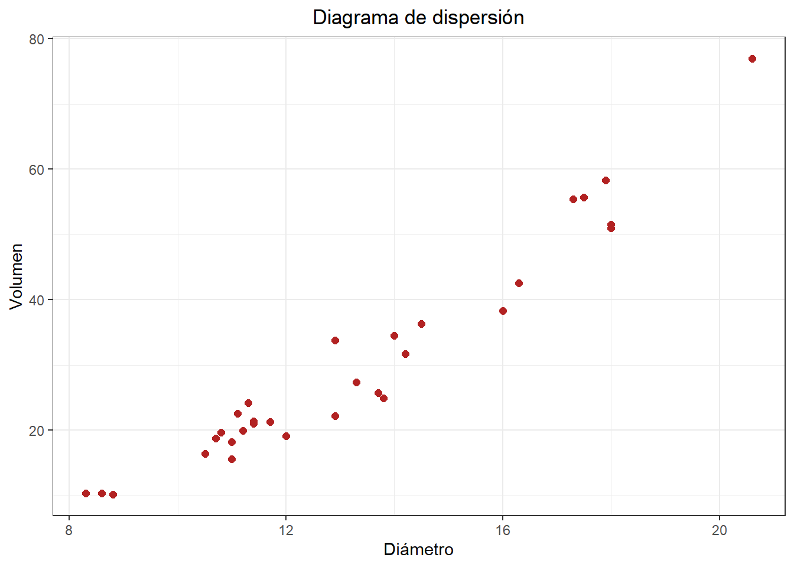
Correlación:
cor(data_arboles$diametro,data_arboles$volumen)## [1] 0.9671194¿Existe una alta correlación entre estas variables?